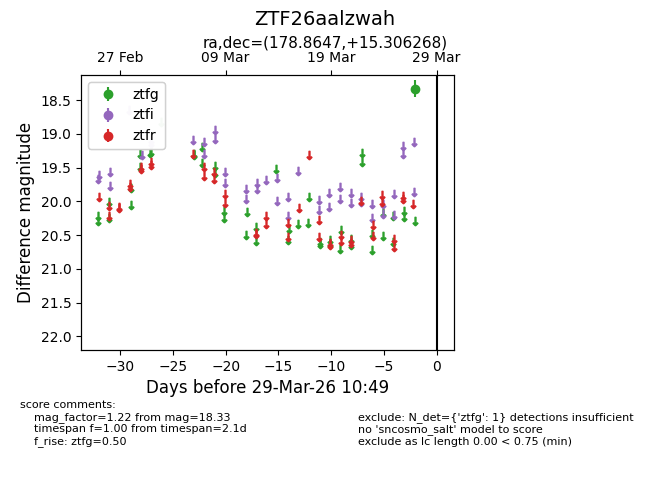
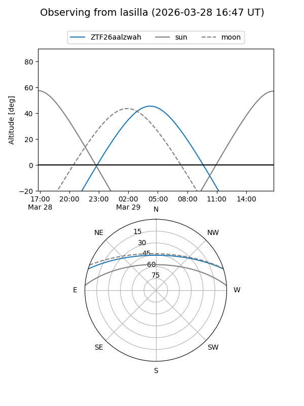
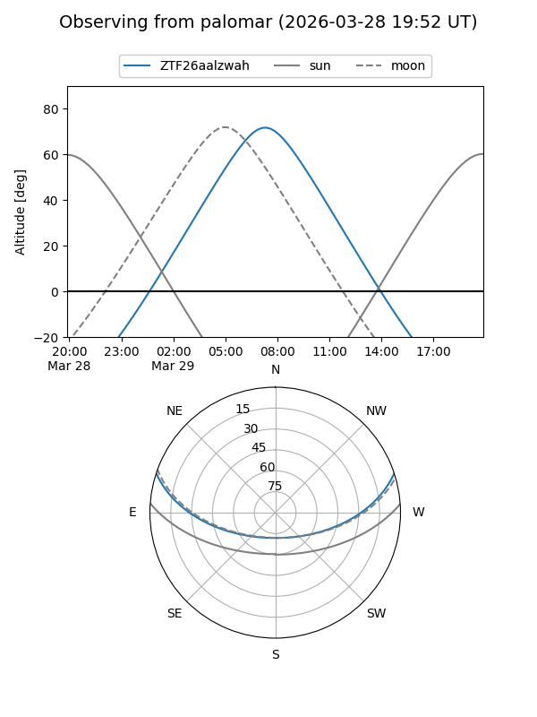

ZTF26aalzwah
Target ZTF26aalzwah at 2026-03-29 10:52
Aliases and brokers:
FINK: link
Lasair: link
ALeRCE: link
alt names
ZTF26aalzwah (ztf,fink_ztf)
Coordinates:
equatorial (ra, dec) = 178.8647,+15.30627
equatorial (HMS+DMS) = 11:55:27.52,+15:18:22.56
galactic (l, b) = (252.3640,+72.42244)
Flags:
Photometry:
last ztfg=18.33
1 ztfg detections
Lightcurve

Visibility


Additional plots